Flutter
Streams
source: https://www.youtube.com/watch?v=nQBpOIHE4eE
Streams:
- One of the fundamentals of reactive programming
- Future
-> Asynchrously delivered value(of type Type) or error.
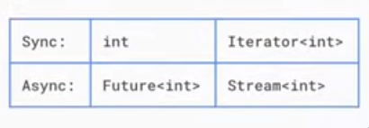
If you think about the way a single value relates to an iterator of the same type, that's how a future relates to a stream.
Just like with futures, the key is deciding in advance, here's what to do when a piece of data is ready, when there's an error, and when the stream completes.
(Attempt) Reading a whole file from command line with dart.
source: https://stackoverflow.com/a/28805065
There are shit tonne of youtube videos and other resources talking
about stdin.readLineSync to get input from the user. But what I
was looking for was how to read a file from stdin. Like so:
import 'dart:convert';
import 'dart:io';
void main() {
stdin.echoMode = false;
stdin.lineMode = false;
var input = <int>[];
var subscription;
subscription = stdin.listen((List<int> data) {
// if (data.contains(4)) {
// print(latin1.decode(data));
// subscription.cancel();
// }
if (!data.contains(4)) {
input.add(data[0]);
} else {
print(latin1.decode(input));
subscription.cancel();
}
});
// stdin.echoMode = false;
// stdin.lineMode = false;
//
// var subscription;
// subscription = stdin.listen((List<int> data) {
// if (data.contains(4)) {
// print("EOF reached");
// subscription.cancel();
// print(latin1.decode(data));
// }
// // var s = latin1.decode(data);
// // stdout.write(s);
// // else {
// // var s = latin1.decode(data);
// // stdout.write(s);
// // }
// });
}
Error:
255 vector@resonyze ~ % cat <<EOF | dart run testt.dart
This is line 1
This is line 2
This is line 3
EOF
Unhandled exception:
StdinException: Error setting terminal echo mode, OS Error: Inappropriate ioctl for device, errno = 25
#0 Stdin.echoMode= (dart:io-patch/stdio_patch.dart:85:7)
#1 main (file:///home/vector/testt.dart:7:9)
#2 _delayEntrypointInvocation.<anonymous closure> (dart:isolate-patch/isolate_patch.dart:297:19)
#3 _RawReceivePort._handleMessage (dart:isolate-patch/isolate_patch.dart:184:12)
Container class
source: https://api.flutter.dev/flutter/widgets/Container-class.html
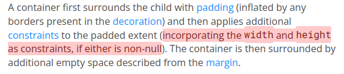
The height, and width properties of the Container, become constraints
to the child of Container.
Note that you don't specify a max height or min height, just height (same
for width). What this implies is that height argument of Container is both
max and min, which means the Container basically forces its child widget to
to the dimensions specified in height and width argument.
Constraints
source: https://docs.flutter.dev/ui/layout/constraints
The widget (colored some shade of white) below is composed of a Column. The Column contains 2 childs: FIRST CHILD and SECOND CHILD.
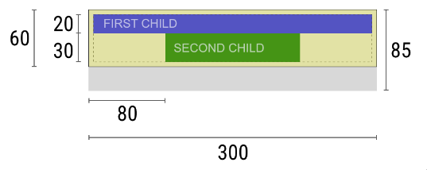
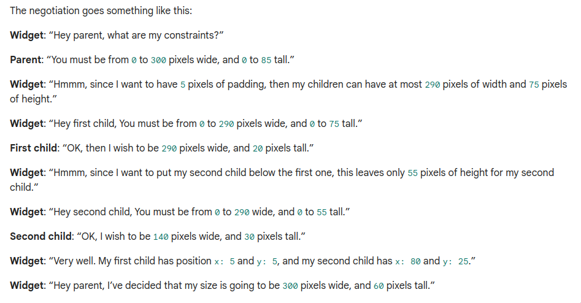
From the above 'negotiation' we see that the parent has given to this widget a range of values for height and width from which it can choose (unlike a container widget parent where a height and width are passed as arguments). But note that before it reports it size, it passes constraints to its child widgets after adjusting for padding field.
Widget: “Hmmm, since | want to have pixels of padding, then my children can have at most 290 pixels of width and 75 pixels of height.”
Now the child widget (FIRST CHILD) has to pick its dimensions from the range provided by constraints. It picks the maximum width available to it: 290. For height it picks 20. Remember the maximum height given to it was the size available to the parent minus the padding applied (85 - 10 = 75). Now the parent has 75 - 20 = 55 left to it. So the second child is left to pick from 0-55 for height and 0-290 for width. Now the widget positions the child elements. Now since the child widgets have decided their size, the widget reports to its own parent that it will have a width of 300 (since one of its child wanted the max) and a height of 60, which is the height of its child widgets + padding.
Default app
Its worth taking a serious look into the default app created by
flutter when you run flutter create someApp:
import 'package:flutter/material.dart';
void main() {
runApp(const MyApp());
}
class MyApp extends StatelessWidget {
const MyApp({super.key});
// This widget is the root of your application.
@override
Widget build(BuildContext context) {
return MaterialApp(
title: 'Flutter Demo',
theme: ThemeData(
// This is the theme of your application.
//
// TRY THIS: Try running your application with "flutter run". You'll see
// the application has a purple toolbar. Then, without quitting the app,
// try changing the seedColor in the colorScheme below to Colors.green
// and then invoke "hot reload" (save your changes or press the "hot
// reload" button in a Flutter-supported IDE, or press "r" if you used
// the command line to start the app).
//
// Notice that the counter didn't reset back to zero; the application
// state is not lost during the reload. To reset the state, use hot
// restart instead.
//
// This works for code too, not just values: Most code changes can be
// tested with just a hot reload.
colorScheme: ColorScheme.fromSeed(seedColor: Colors.deepPurple),
useMaterial3: true,
),
home: const MyHomePage(title: 'Flutter Demo Home Page'),
);
}
}
class MyHomePage extends StatefulWidget {
const MyHomePage({super.key, required this.title});
// This widget is the home page of your application. It is stateful, meaning
// that it has a State object (defined below) that contains fields that affect
// how it looks.
// This class is the configuration for the state. It holds the values (in this
// case the title) provided by the parent (in this case the App widget) and
// used by the build method of the State. Fields in a Widget subclass are
// always marked "final".
final String title;
@override
State<MyHomePage> createState() => _MyHomePageState();
}
class _MyHomePageState extends State<MyHomePage> {
int _counter = 0;
void _incrementCounter() {
setState(() {
// This call to setState tells the Flutter framework that something has
// changed in this State, which causes it to rerun the build method below
// so that the display can reflect the updated values. If we changed
// _counter without calling setState(), then the build method would not be
// called again, and so nothing would appear to happen.
_counter++;
});
}
@override
Widget build(BuildContext context) {
// This method is rerun every time setState is called, for instance as done
// by the _incrementCounter method above.
//
// The Flutter framework has been optimized to make rerunning build methods
// fast, so that you can just rebuild anything that needs updating rather
// than having to individually change instances of widgets.
return Scaffold(
appBar: AppBar(
// TRY THIS: Try changing the color here to a specific color (to
// Colors.amber, perhaps?) and trigger a hot reload to see the AppBar
// change color while the other colors stay the same.
backgroundColor: Theme.of(context).colorScheme.inversePrimary,
// Here we take the value from the MyHomePage object that was created by
// the App.build method, and use it to set our appbar title.
title: Text(widget.title),
),
body: Center(
// Center is a layout widget. It takes a single child and positions it
// in the middle of the parent.
child: Column(
// Column is also a layout widget. It takes a list of children and
// arranges them vertically. By default, it sizes itself to fit its
// children horizontally, and tries to be as tall as its parent.
//
// Column has various properties to control how it sizes itself and
// how it positions its children. Here we use mainAxisAlignment to
// center the children vertically; the main axis here is the vertical
// axis because Columns are vertical (the cross axis would be
// horizontal).
//
// TRY THIS: Invoke "debug painting" (choose the "Toggle Debug Paint"
// action in the IDE, or press "p" in the console), to see the
// wireframe for each widget.
mainAxisAlignment: MainAxisAlignment.center,
children: <Widget>[
const Text(
'You have pushed the button this many times:',
),
Text(
'$_counter',
style: Theme.of(context).textTheme.headlineMedium,
),
],
),
),
floatingActionButton: FloatingActionButton(
onPressed: _incrementCounter,
tooltip: 'Increment',
child: const Icon(Icons.add),
), // This trailing comma makes auto-formatting nicer for build methods.
);
}
}
runAppcan take any widget and it will make it the root of the widget tree. But if you're going to design an app with Material design use MaterialApp widget as the root of your app.- Note the three arguments of
MaterialApphere:titlehometheme
- Note the three arguments of
Scaffoldhere:appBarbodyfloatingActionButton
Bulding UI with Flutter
source: https://docs.flutter.dev/ui
- Central idea: Build UI out of widgets.
- Widgets describe what their view should look like given their current configuration and state. When a widget's state changes, the widget rebuilds its descripton, which the framework diffs against the previous description in order to determine the minimal changes needed in the underlying render tree to transition from one state to next.
💡 Widgets are descriptions/configurations/blueprints. Note the above point: when a widget's state changes, the widget rebuilds its description, which the framework diffs against... If you know the diff command in Linux, it literally works on text files. Remember that widgets are NOT what's displayed on the screen, what gets displayed are elements. There's a distinct widget tree and an element tree.
Result of / is always a floating point type
To get a value of type int do:
Event loop vs main() function
test.dart:
void main() {
Future.delayed(Duration(seconds: 5), () { print("But the program ends here."); });
print("main function ends here.");
}
If we look at above code for test.dart, we might get the impression that
with the line print("main function ends here.") the little program comes
to an end. But, there's more to it than what meets the eye.
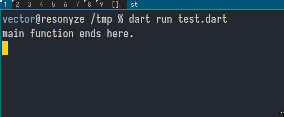
Even after running the last line of code of the main has executed, the program
keeps running. Why? Because there's something in the event queue. Only after
the event queue becomes empty, does the program come to an end:
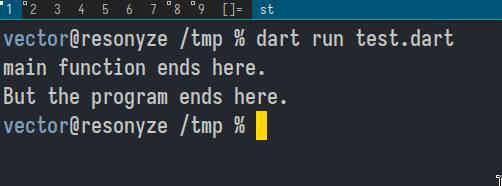
async
You put async keyword on functions that will be working with
a Future<T> value. On the line that takes the Future<T> value
there's going to be the await keyword.
Neat shorthand for functions
Dart has a neat shorthand for functions whose computation can be contained in a single line of code. Example:
Visualizing Future
Future<String> or any Future<T> is the result of an asynchronous operation.
An asynchronous computation cannot provide a result immediately when it is started, unlike a synchronous computation which does compute a result immediately by either returning a value or by throwing. An asynchronous computation may need to wait for something external to the program (reading a file, querying a database, fetching a web page) which takes time. Instead of blocking all computation until the result is available, the asynchronous computation immediately returns a Future which will eventually "complete" with the result.
Future.delayed(Duration(seconds: 5), () => "Result string") is a good way
to visualize a Future<String>.
void main() async {
var result = await someReturn();
print("The result of computation is: ${result}");
}
Future<String> someReturn() {
return Future.delayed(Duration(seconds: 5), () => "Result string");
}
Synchronous and Asynchrnous
source: https://dart.dev/codelabs/async-await
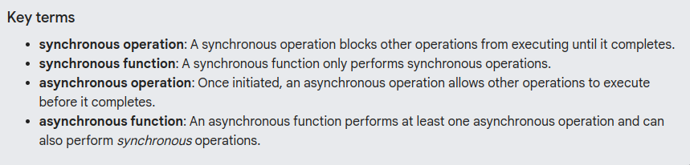
Reading Documentation/LSP Info
When looking up dart documentation, you might come across code like above. It
gives you core info about the Future.delayed function :
- The function is
Future.delayed - It returns a
Future<String>value - It needs (compulsory) a value of type
Durationto be passed to it. - Opitionally, you can pass to it a function that returns a
FutureOr<String>.
Isolates and Event Loops
https://www.youtube.com/watch?v=vl_AaCgudcY
Today (05/03/2024), is my second day watching this video. I realize now this diagram is an accurate and neat way to visualize an isolate:
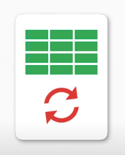
to
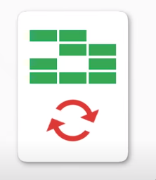
The animations of that diagram makes a lot of sense too. You see those green blocks that light up or switch off, they're representing the memory that's allocated to the isolate.
And the arrows that circle around one another is the event loop (obviously). The event loop, that runs also has its own thread.
Crucial point is that ALL dart code run in an isolate.
"In dart, each thread is in its own isolate, with its own memory and it just processes events."
Update: 06/03/2024
00:34: "What makes asynchrony possible in dart? Isolates" 02:17: "What really makes async code possible: the Event Loop"
"All of the high level APIs that we're used to for asynchronous programming: Futures, Streams, async and await, they're all built on and around this simple loop."
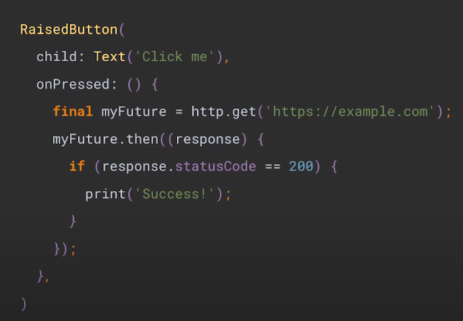
Update: 07/03/2024
Isolate example used in the video:
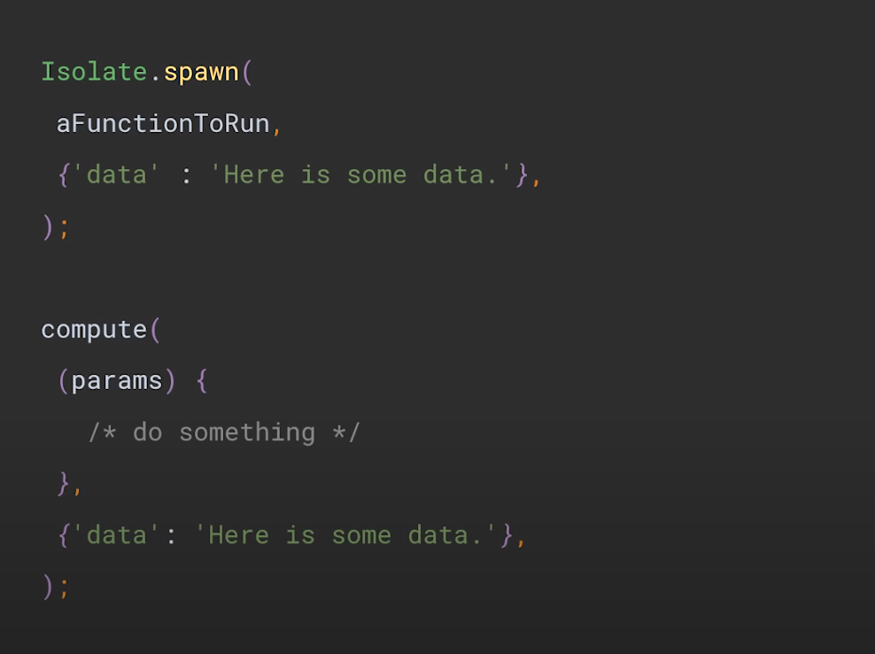
Stateful Widget
https://www.youtube.com/watch?v=AqCMFXEmf3w
To date (04/03/2024), this is the most insightful videos on flutter I've watched. I'll summarize what I've understood with this and the last video on Stateless widget.
Firstly, know that widgets that you create in flutter, by extending Stateless or Stateful widgets, are immutable configuration files for Elements. It is these Elements that we see on android/ios/linux/windows screen.
Forget flutter specifics for the moment. Imagine you want to display a screen that contains message that says: "You pressed this screen $number times". It contains 2 fields:
- The message: "You pressed this $number time"
- The number: number
You can model ths with a simple class
class Screen {
int number = 0;
String message = "You pressed this screen 0 times";
void updateNumber() {
number += 1;
message = "You pressed this screen $number times";
}
void printOutPut() {
print(message);
}
}
void main() {
var someScreen = Screen();
someScreen.updateNumber();
someScreen.updateNumber();
someScreen.updateNumber();
someScreen.printOutPut();
}
Its good to think in terms of classes this way. But how do we adapt our thinking
to work within the flutter framework? Firstly, all the main() function should
have the code runApp().
When we incorprate runApp(), we had to make the following modifications:
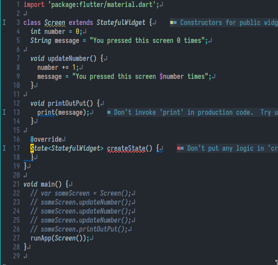
For runApp() to be legit code, you need to import material.dart. And runApp
expects a widget. So we make Screen extend Stateful widget. At this point
we note that Stateful widgets, once expanded into the widget tree by runApp
and then called by the flutter framework to create an Element creates a
StatefulElement. Stateful Element will refer back to the widget that created
and as for a State object. This is why classes that extend Stateful widgets
have a createState method.
Now let's make the required changes to have this display something on the screen.
import 'package:flutter/material.dart';
class Screen extends StatefulWidget {
String message = "You pressed this screen 0 times";
@override
State<StatefulWidget> createState() {
return _ScreenState();
}
}
class _ScreenState extends State<Screen> {
int number = 0;
@override
Widget build(BuildContext context) {
// TODO: implement build
return Center(
child: Text(
"You pressed this screen $number times",
style: TextStyle(
fontSize: 24,
),
textDirection: TextDirection.ltr,
),
);
}
}
void main() {
// var someScreen = Screen();
// someScreen.updateNumber();
// someScreen.updateNumber();
// someScreen.updateNumber();
// someScreen.printOutPut();
runApp(Screen());
}
StatefulElement that gets loaded into the element tree from from root of the
widget tree, Screen, looks back to Screen for a State object. The element
tree hold the State object, which builds a widget to the widget tree, which
creates it corresponding element in the element tree which again refers back
to the widget for any children.
Remember how in the previous version of our app that just ran in the terminal
we put the code that updates the count field in the main(). But now the
context is different. We're inside a flutter app. We can have the flutter
framework itself execute the necessary code (which we pass as a function),
import 'package:flutter/material.dart';
class Screen extends StatefulWidget {
String message = "You pressed this screen 0 times";
@override
State<StatefulWidget> createState() {
return _ScreenState();
}
}
class _ScreenState extends State<Screen> {
int number = 0;
@override
Widget build(BuildContext context) {
// TODO: implement build
return GestureDetector(
onTap: () {
setState(() {
number++;
});
},
child: Center(
child: Text(
"You pressed this screen $number times",
style: TextStyle(
fontSize: 24,
),
textDirection: TextDirection.ltr,
),
),
);
}
}
void main() {
// var someScreen = Screen();
// someScreen.updateNumber();
// someScreen.updateNumber();
// someScreen.updateNumber();
// someScreen.printOutPut();
runApp(Screen());
}
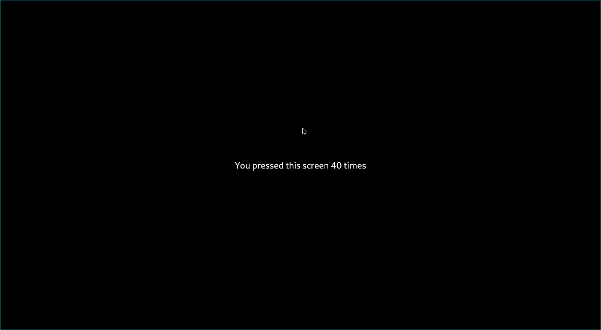
Stateless Widgets
https://www.youtube.com/watch?v=wE7khGHVkYY
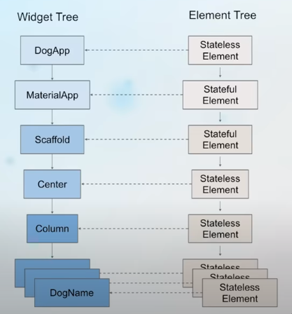
- Flutter apps have both an Element tree and a Widget tree.
- What we see on the screen is the Element tree. The Widget tree is the blueprint for the element tree.
runApptakes the widget that's passed to it and makes it the root of the Widget tree.- Once the widget is loaded to the root of the widget tree, Flutter framework calls the createElement method. This creates an instance of Element class that's gonna be the root of the element tree.
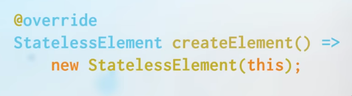
"A stateless widget is a widget that's composed of children. Which is why it has a build method. 💡"
- The element tree then checks if it as any children, and calls the
buildmethod of the widget from which it was created.
Look at the widget-tree and the element-tree for the code below.
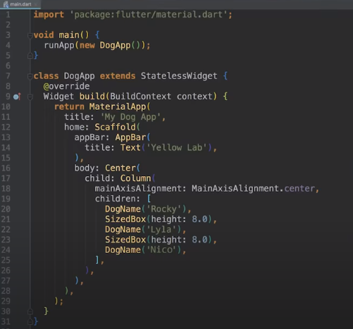
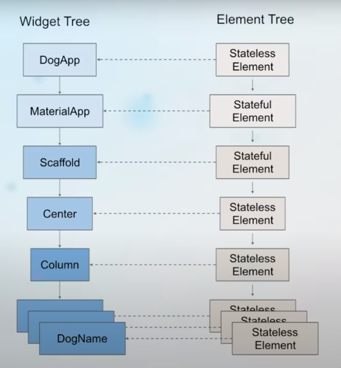
The widget at the root of the widget tree is the widget that you
defined, here DogApp.
Dart classes
The fields within a dart class are non-nullable unless its stated explicity with
a ?. The following code is fine:
But the moment you delete the ? marks, LSP will complain its a non-nullable
field and it must be initialized. This is important to keep in mind as we model
stuff as dart classes. 😀
But when we declare fields as final, its not the null-safety rules, but by
virtue of being final that we gotta intialize the fields.
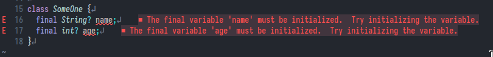
Since final fields need to be initialized before the class gets instantiated, they need to initialized BEFORE the constructor gets called. This is where initializer lists comes in:
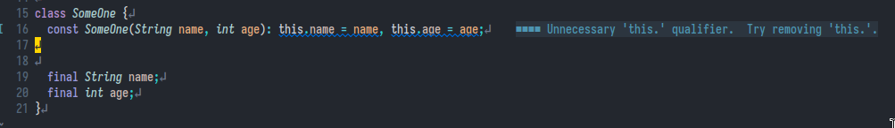
But we've gotta a shorthand for initializer list:
Upate 2024-03-02 10:24AM
I no longer think this can be considered an equivalent to initializer list. The below code just forces you to create an object of the class specifiying arguments, whereas with initializer list you can check whether arguments are null (not passed to the constructor) and set them approrpriate values.
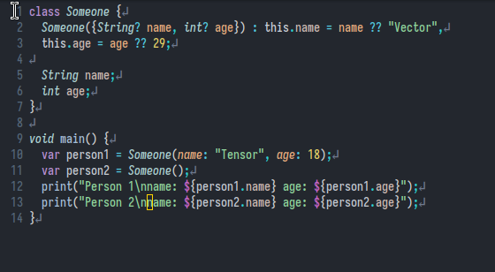
Yeah. So I no longer think below is a shorthand for initializer list:
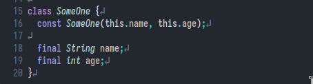
With the above definition of constructor, we're gonna have to initialize the
class with positional parameter: var thisOne = SomeOne('Vector', 29). This
isn't as verbose as I would like it to be. This is where named arguments
and {} come into play:
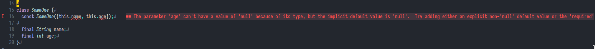
But unlike positional paramaters, the parameters within {} are optional, so
nullable. This is the errors are raised. This is were required keyword
comes to play. When named parameters (those within {}) refer to fields that
are non-nullable, you need to preprend required before this.
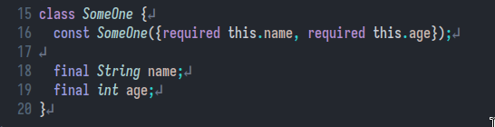
Installation
I followed the manual method of installation : link
Note my path in .zshrc.local or .bashrc/.zshrc in your system:
Upgrade
To upgrade, I just cd $HOME/flutter and flutter upgrade